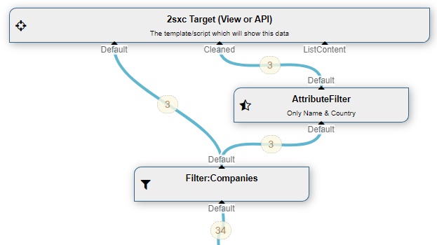

Class AttributeFilter
DataSource to only pass through configured AttributeNames - other attributes/properties are removed from the entities.
The AttributeFilter DataSource is part of the Standard EAV Data Sources. It removes values from items so that the result is smaller, and doesn't publish confidential data. It's primarily used when providing data as JSON, so that not all values are published.
How to use with the VisualQuery
When using the VisualQuery you can just drag it into your query. Now you can configure what properties you want and not. The following shows a demo which delivers both the data as-is, and also filtered to only deliver Name and Country:

This is what you get on the default-case (unfiltered):
"Default": [
{
"Name": "2sic",
"Country": "Switzerland",
"Notes": "<p>Secret notes</p>",
"Categories": [
{
"Id": 38646,
"Title": "Second"
}
],
"Id": 38653,
"Guid": "46a46d9e-f572-413c-a42e-a82ac40d929d",
"Title": "2sic",
"Modified": "2017-11-06T22:38:00.15Z"
},
...
]
This is what you get on the filtered stream:
"Cleaned": [
{
"Name": "2sic",
"Country": "Switzerland",
"Id": 38653,
"Guid": "46a46d9e-f572-413c-a42e-a82ac40d929d",
"Title": "2sic",
"Modified": "2017-11-06T22:38:00.15Z"
},
...
]
As you can see, the secret Notes and the Categories are not in the Cleaned stream any more.
There are three common use cases:
Programming With The Attribute Filter
We recommend to use the VisualQuery where possible, as it's easier to understand and is identical for C# and JavaScript. It's also better because it separates data-retrieval from visualization.
Read also
Demo App and further links
You should find some examples in this demo App
History
- Introduced in EAV 3.x, 2sxc ca. v6
API Documentation
Inheritance
Implements
Inherited Members
Namespace: ToSic.Eav.DataSources
Assembly: ToSic.Eav.DataSources.dll
Syntax
[PublicApi_Stable_ForUseInYourCode]
[VisualQuery(NiceName = "Remove Attribute/Property", UiHint = "Remove attributes/properties to limit what is available", Icon = "delete_sweep", Type = DataSourceType.Modify, GlobalName = "ToSic.Eav.DataSources.AttributeFilter, ToSic.Eav.DataSources", DynamicOut = false, In = new string[]{"Default*"}, ExpectsDataOfType = "|Config ToSic.Eav.DataSources.AttributeFilter", HelpLink = "https://r.2sxc.org/DsAttributeFilter")]
public class AttributeFilter : DataSource, IDataSource, IAppIdentity, IZoneIdentity, IAppIdentityLight, ICacheInfo, ICacheKey, ICacheExpiring, ITimestamped, ICanPurgeListCache, IHasLog, IDataTarget, IDataPartSharedRemarks
Technically many things could just identify the app they belong to, and let the system look up the zone. But this would be inefficient, so for optimization, many items identify themselves with both the app and zone Ids
Fields
| Improve this Doc View SourceModeKeep
Declaration
public static string ModeKeepField Value
| Type | Description |
|---|---|
| System.String |
ModeRemove
Declaration
public static string ModeRemoveField Value
| Type | Description |
|---|---|
| System.String |
Properties
| Improve this Doc View SourceAttributeNames
A string containing one or more attribute names. like "FirstName" or "FirstName,LastName,Birthday"
Declaration
public string AttributeNames { get; set; }Property Value
| Type | Description |
|---|---|
| System.String |
Mode
A string containing one or more attribute names. like "FirstName" or "FirstName,LastName,Birthday"
Declaration
public string Mode { get; set; }Property Value
| Type | Description |
|---|---|
| System.String |